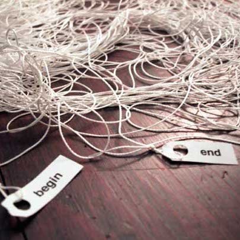

Friends?: I Feel Conflicted
Discuss a time you had an emotional conflict with someone. What was it about? What happened?
Okay, I was great friends with this girl, we talked about everything! Went and did everything together, but, her jealousy over a friendship that I had with another girl was constantly putting a wedge between her and I. Every time she would snap at me, I would assure her that I wasn’t great friends with this other girl and that her and I were much closer… One day while we were at work she snapped at me in front of everybody.
What was the source of the conflict?
The source in my opinion was jealousy of my friendship with other people.
How did you handle that conflict?
I brushed it off and tried to work through it a couple of times, but when she snapped at me in front of everyone. I told her that her jealousy was getting in the way and we can no longer be friends.
Did your actions make the conflict better or worse?
Honestly, I felt a lot better when I wasn’t around her; I think we needed some time apart so that we could develop alone and then come back with a better understanding of each others consciousness.
If you could go back, what would you do differently, if anything?
No. I wasn’t hurtful, just truthful.
What did you learn from this experience?
This has taught me that relationships of all sorts are always evolving, and sometimes you need to take time apart from people to better understand them and yourself. We are still friends and the time apart in my opinion strengthened the bond between us. She will always be one of my true friends in life.
Which One to Choose I Feel Conflicted
This Is Gonna Be A Long Day